In general, the aim of sound synthesis is to move away from sampling, so that existing sounds can be reproduced or expanded and new sounds, impossible to generate naturally, can be realised. Some of the early methods included additive, wavetable, and FM synthesis, all of which were not particularly computationally intensive but all sounded rather artificial, without much natural character, due to the fact that the spectral content of the sounds was relatively constant or predictable. The paradigm of Physical Modelling came out of this desire to produce sounds that were more interesting and take inspiration from real physical systems, such as musical instruments, as well as having the ability to produce abstract virtual instruments that had the satisfying morphing qualities of real instruments.
An acoustic physical model can be seen as a set of Newtonian equations that describe the physical motions of an object or system, which can then be used to generate sound. These models have various parameters that are linked to the physical nature of the object, such as tension, elasticity, and size, which change how the model responds to inputs. Compared to other methods of sound synthesis, one of the most notable differences is the naturalness of the sounds produced, making them an intriguing field of research in creating novel virtual musical instruments.
Many branches of physical modelling exist that explore different methods. Below is a summary of a few of them.
These are a collection of masses with connections that obey Hooke’s law, 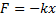, which states that the displacement of a deformation of a solid is directly proportional to the deforming force [1]. With the addition of a damping factor , and the velocity of the mass , Hooke’s law can be extended for the case of a lossy system, where 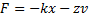.
This can then be equated with Newton’s second law of motion, 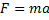, to get a formula for the acceleration of each mass due to the forces exerted on it by the other masses of at a time :
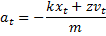
Noting that velocity is the time derivative of displacement, acceleration is the time derivative of velocity, and using a finite difference approximation for the partial derivatives:
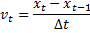
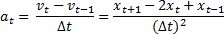
The equation can be rewritten, letting  ,
,  , and solving
for 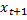:
, and solving
for 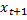:

This last equation gives the next value of the displacement based on the current and previous displacements for one dimension. This can be generalised to three dimensions to allow networks of any size, shape and connectivity to be realised. Virtual microphones or pickups can be placed on any of the masses to take its movement as the sound output.
The underlying mathematics for the digital waveguide comes from the discretised travelling wave solution to the wave equation:

Which can be rewritten, observing that 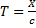, letting  and
and
 , as [2]:
, as [2]:

This equation can be realised using two
parallel delay lines of length , one
representing the
right going wave,  , and the
other
representing the left going wave,
, and the
other
representing the left going wave,  . The values
of the
delays lines at an arbitrary sample point 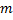 are
then summed as shown below [3]:
. The values
of the
delays lines at an arbitrary sample point 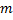 are
then summed as shown below [3]:
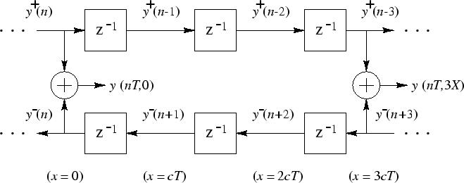
This is a very efficient algorithm as it only requires reading, writing, and addition operations when being executed on a computer. This allowed this type of synthesis to be possible early on compared to other methods due to its low computational cost, and was used in the Kelly-Lochbaum vocal tract model, a digital implementation of a piecewise cylindrical tube with a discontinuous diameter, with lossless scattering junctions to model the discontinuities, shown below [4]:
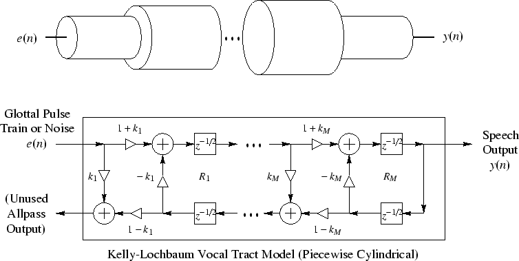
In general, when a function and its derivatives are single-valued, finite and continuous, then a Taylor series expansion can be taken to give and approximation of the function and versions of it shifted by 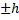. Considering 4th and higher order terms negligible, and taking the difference of the two Taylor series from the shift, the following equation can be obtained [5]:

This is known as the central-difference approximation, as it looks at points equidistant on both sides of the point of interest. Forward- and backward-difference approximations can be obtained by taking the difference of difference combinations of Taylor series:


By extension, second derivatives may be calculated, and using partial differentiation to include multiple variables, such as space and time, the wave equation can be written in terms of finite difference approximations as follows:

In terms of physical modelling, this formula can be rearranged to calculate the next displacement or pressure value, 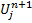, by using neighbouring points on the space-time grid [6], where:
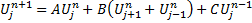
The following notations are used in the above equations:
· 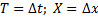
·

· 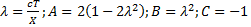
Physical models are superior in their ability to generate natural sounds to other forms of synthesis, such as wavetable which gets very boring as the samples never change, and are merely repeated. Relatively few parameters are needed to alter the sound and the models are generally perceptually easier to control, unlike additive synthesisers which require large numbers of sinusoids, amplitudes and phases, the calculations of which are not practical even for the most experienced engineer or musician. Consequently, these models allow minor changes to be made with minimal effort, as only a few parameters control the overall sound. This means that as well as being simpler than other methods of synthesis, modelled instruments could be beneficial in recording, as changes to notes don’t require a whole rerecording.
However, there are some downfalls that mainly revolve around the fact that physical models can be much more computationally expensive than their counterparts. For instance, the number of timbres that can be produced using an FM scheme is huge when compared to the computation required to perform the synthesis. This means that real-time applications are much harder, or impossible, to realise with current computing power. With simulations of some complex models taking days to render an output, this greatly reduces the feasibility of these models to be used as live instruments or for composition [5].
Kelly and Lochbaum collaborated with Max Matthews in 1962 to produce a version of ‘Bicycle Built for Two” to demonstrate the capabilities of their model. Stanley Kubrick then used this in his 1968 film “2001: A Space Odyssey” as the song that the main computer HAL sings before being deactivated.
ADD SOUND SAMPLE
The ‘Sculpture’ synthesiser in Apple’s DAW Logic uses physical modelling algorithms to generate its output and has a perceptually intuitive interface that involves sliding between four material types, Nylon, Wood, Glass, and Steel, to change the quality of the output.
Nylon: ADD SOUND SAMPLE
Wood: ADD SOUND SAMPLE
Glass: ADD SOUND SAMPLE
Steel: ADD SOUND SAMPLE
Hybrid: ADD SOUND SAMPLE
Mass and spring triangular array
|
[1] |
T. E. o. E. Britannica, “Hooke’s law,” Encyclopædia Britannica, 24 February 2001. [Online]. Available: https://www.britannica.com/science/Hookes-law. [Accessed 28 March 2017]. |
|
[2] |
J. O. S. III, “Physical Modeling using Digital Waveguides,” 16 March 1993. [Online]. Available: https://courses.cs.washington.edu/courses/cse467/05wi/pdfs/pmudw.pdf. [Accessed 29 March 2017]. |
|
[3] |
J. O. S. III, “Digital Waveguide Scheme,” Center for Computer Research in Music and Acoustics (CCRMA), 28 December 2005. [Online]. Available: https://ccrma.stanford.edu/~jos/wgfdtd/Digital_Waveguide_Scheme.html. [Accessed 29 March 2017]. |
|
[4] |
J. Smith, “Kelly-Lochbaum Vocal Tract Model,” Stanford University, 19 February 2006. [Online]. Available: https://ccrma.stanford.edu/~jos/SMAC03S/Kelly_Lochbaum_Vocal_Tract_Model.html. [Accessed 28 March 2017]. |
|
[5] |
G. D. Smith, “Numerical solution of partial differential equations,” in Finite Difference Methods, Oxford, Oxford University Press, 2004, pp. 6-7. |
|
[6] |
Universite catholique de Louvain, “Time and space discretisations using finite differences,” 2008. [Online]. Available: http://www.climate.be/textbook/chapter3_node19.xml. [Accessed 29 March 2017]. |
|
[7] |
G. Delap, “The NESS Project: Physical Modeling Sound Synthesis and Composition,” 17 August 2016. [Online]. Available: https://youtu.be/j1HP4SB1RFI?t=1m20s. [Accessed 28 March 2017]. |
|
[8] |
University of Edinburgh, “NESS,” 2016. [Online]. Available: http://www.ness.music.ed.ac.uk/. [Accessed 26 March 2017]. |
|
[9] |
University of Edinburgh, “MusICA Seminar: Stefan Bilbao & colleagues - Next Generation Sound Synthesis (NESS),” 26 February 2013. [Online]. Available: https://www.youtube.com/watch?v=QdFSHN5YOHk. [Accessed 28 March 2017]. |